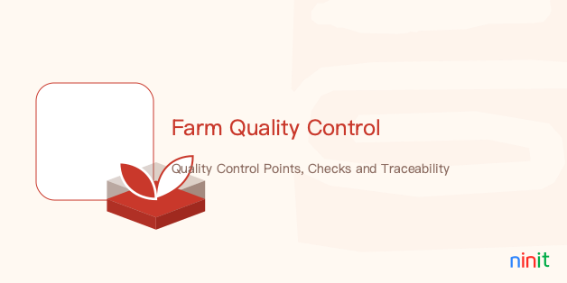

标准化农业数据模型，确保跨模块语义对齐。
Standardized agri-data model ensuring semantic alignment.
覆盖业务全生命周期，实现端到端的流程自动化。
End-to-end automation across the business lifecycle.
基于实时数据的智能资源分配与任务调度。
Intelligent resource allocation based on real-time data.
Follow GeninIT Industrial Visual Language (GIVL) Standards.